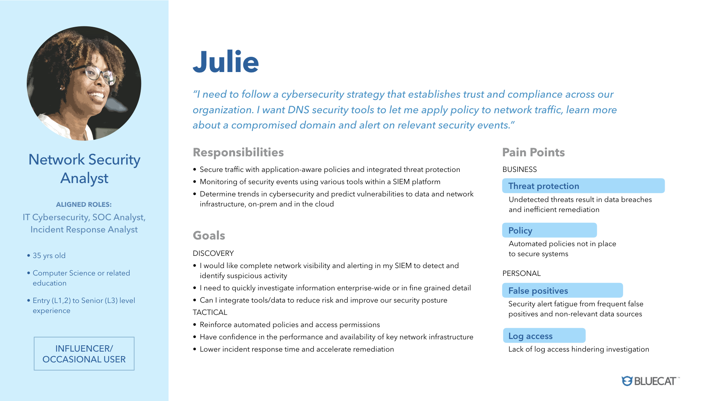
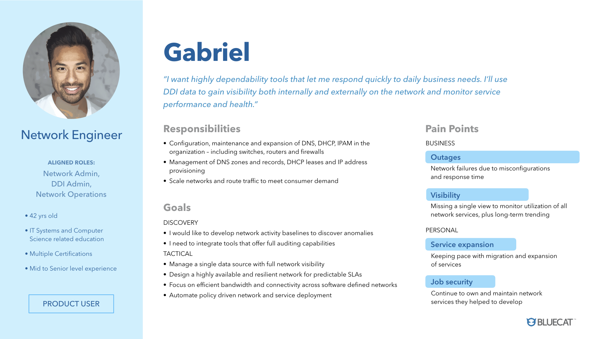
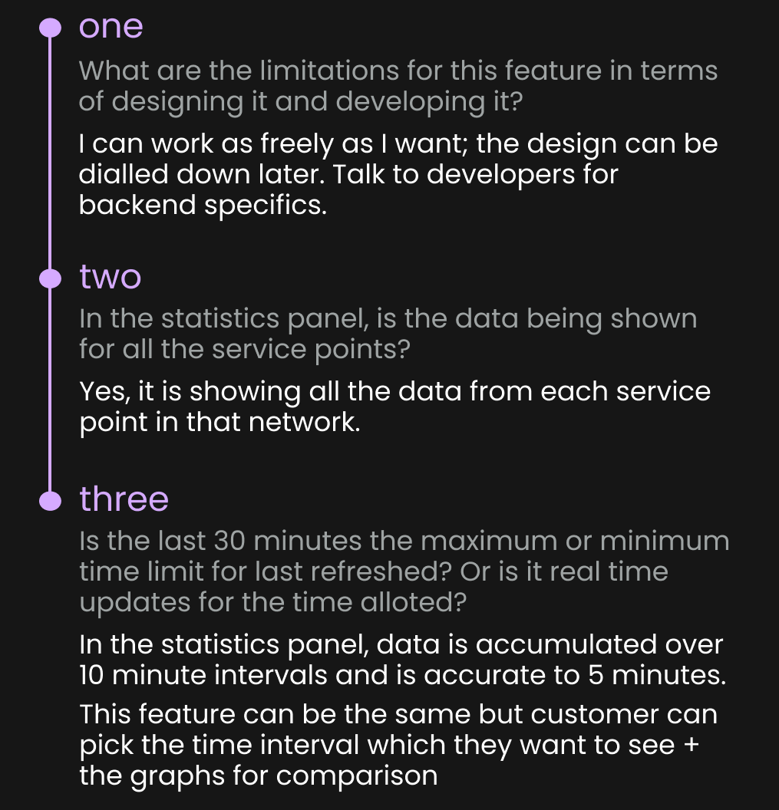
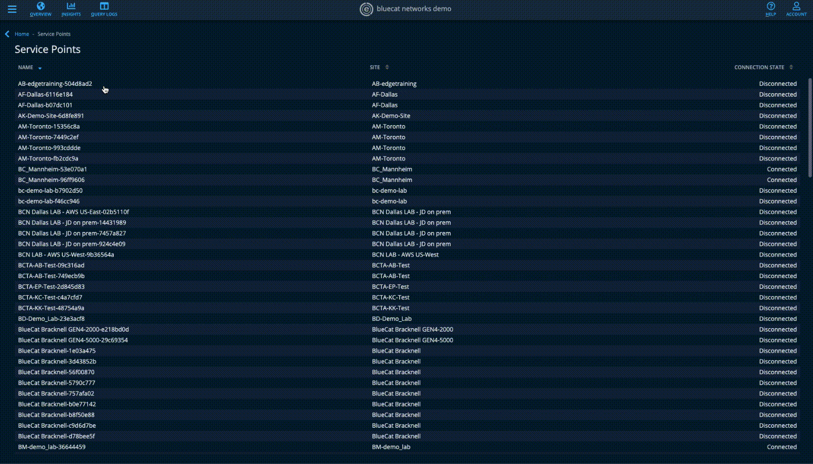
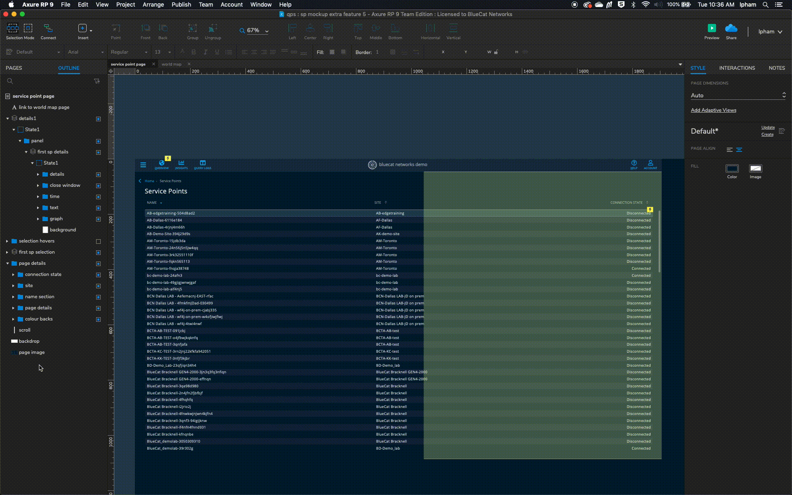
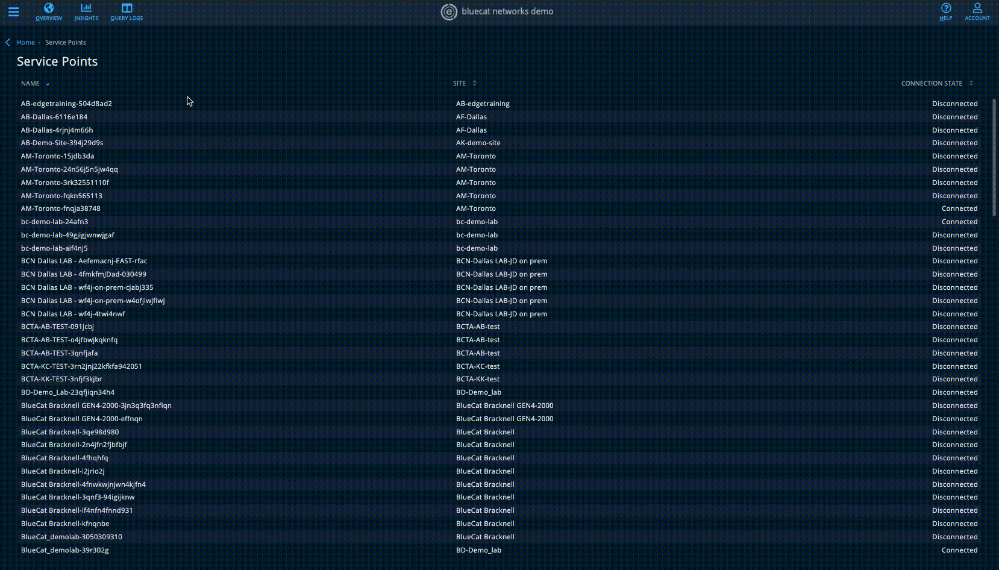
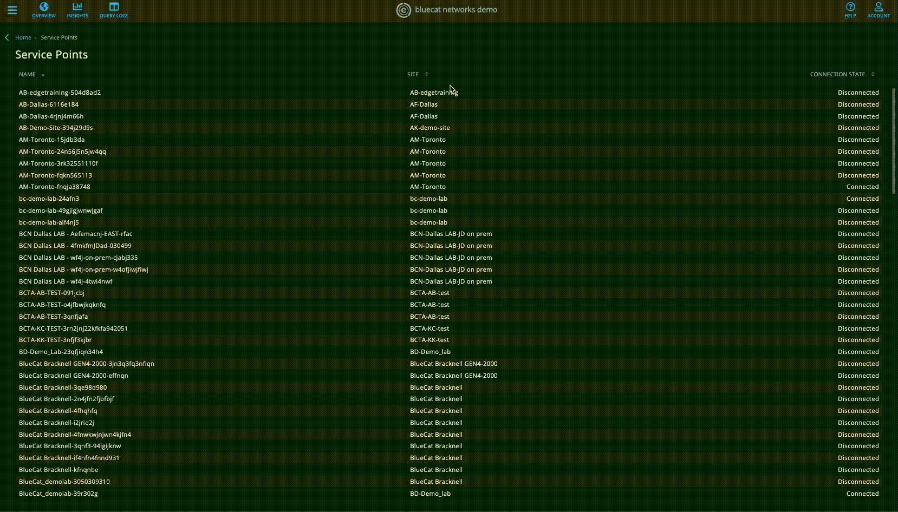

user experience + interaction design
004. exposing queries per second per service point in Customer Intelligence
overview
On BlueCat Edge, customers want to understand the load on service points deployed to ensure that they have set up an adequate amount to handle existing traffic loads.
customer problem
Currently, there is no way for customer to identify the queries per second per service point. Adding this feature will also help fine tune anycast routing weight distributions.
goal
Expose an average queries per second (e.g. matching the interval time used in the Statistics panel of the Overview page) on a given service point. The ideal scenario is that the data could be exposed both as a number and via graph form (think the Statistics panel graphic representation of traffic).
result
The concept has been approved by the product manager heads of BlueCat Edge, and is in the development phase.
Assessing the situation
What's the problem?
Back in early december, companies such as Mizuho, Porsche, and University of Pittsburgh, requested metrics for QPS per SP. The request was opened for UPitt in order to allow them to confirm Anycast is distributing the load on all SPs in the pool.
My Role
What did I do?
This was my first project at BlueCat, where I learned the principles of networks and put together a feature that required for the average QPS of a service point to be visibly. Understanding the basics of QPS and the term service point, it expanded my knowledge on how security intertwines with networks.
Persona #1: Infrastructure Engineer
Persona #2: Network Engineer
Questions about the feature
Axure
Web



